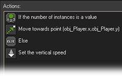
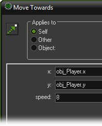

Tutorial
Page 10 of 13
More Enemies
In this section we are going to add three new types of enemy planes to our game. One will fire bullets straight down. The second plane will fire bullets towards the main plane.
The third type will not fire bullets but comes from the bottom of the room and is more difficult to avoid or shoot. We will make them appear at later stages during the game.
To create the first new type of enemy plane we must make a new sprite for it, similar to the sprite for the first enemy but with a different color. Secondly we need a new object
for it. Because the object will behave almost the same as the first enemy plane we make a copy of this object (right-click on it and choose Duplicate). Double-click on
the new duplicate object to change it. Give it a new name and set the correct sprite. Because this is a more special plane the player should get a higher score when shooting it.
So in the collision event with the bullet we change the score to 10.
For the enemy plane to shoot, we need a bullet sprite and a bullet object. This object, in its creation event, gets a vertical speed downwards. In its step event we again take care
that the object is destroyed when it moves out of room at the bottom. In the collision event of this bullet with the main plane we set the health relative to -5, destroy the bullet,
and play a sound.
We now must make the enemy plane shoot bullets from time to time. We do this in the step event of the plane. We use the action to throw a dice and as parameter we put 30.
This means that the next action is performed on average once every 30 steps. In this next action we create the enemy bullet.
Finally we must make sure that at some stage the second enemy plane starts appearing. For this we use the controller_enemy object again. In the creation event we
set alarm 1 to a value of 1000. In this alarm event we create the second enemy plane and set the alarm 1 again to 500 to create another plane a bit later. So the first plane of
this type will appear after about 30 seconds and an extra one appears about every 15 seconds.
For our next type of enemy plane we again need a new sprite and we need a new bullet sprite. We make a copy of the second enemy plane object and, as above, in the collision
event with the normal bullet we change the score to increase it to 20.
We also create a second enemy bullet object. The enemy plane creates this new type of bullet in its step event. Again we use the dice action but now we only create a bullet
once every 80 steps, because our new type of bullet is a lot harder to avoid.
The new type of bullet works as follows. In its creation event we use the action to move towards a position. But what position should we use? Well, we want to shoot towards
the position of the main plane. So we want to know the x and y position of this object instance.
This can be achieved easily in GameMaker. To get the value of a variable in another instance we precede the variable name with the name of the object. So we use obj_myplane.x
to indicate the value of the x coordinate of the plane. When there are multiple instances of this object we get the value of the variable in the first instance.
When there is no instance of the object we will get an error message. This can be a problem for our game because when the plane is destroyed there temporarily is no plane. So
we better first check whether the plane is there. There is an action that can count the number of instances of a particular object. We use this to check whether the main plane is
available and, if so, direct the bullet towards the plane. Otherwise the bullet will go downwards. So the creation event will look as follows:

The action to move towards a point now has the following parameters:

One other change is required. As the bullet can fly in any direction it is a bit more difficult to test in the step event whether the bullet lies outside the room. But actually, there is
a special event for this: the Outside event. In this event we simply put an action to destroy the object.
Finally we have to handle the creation of the new type of enemy planes. As indicated before we use the controller_enemy object for this. In the creation event we set
alarm 2 to 2000. In this alarm event we create the new type of enemy plane and set the alarm 2 again to 1000 to create another one sometime later.
This finishes the adding of our third type of plane. It remains to add the planes that come from below. This is done in exactly the same way as the first enemy plane, except that
the plane starts below the room and moves upwards rather than downwards. The controller_enemy object again creates them, this time using alarm 3. You should by now
understand how to do this, but you can also look in the game.
This finishes our fourth version of 1945. It has now become a playable game that gets harder all the time. There actually is some fun in playing it and trying to achieve the highest score.